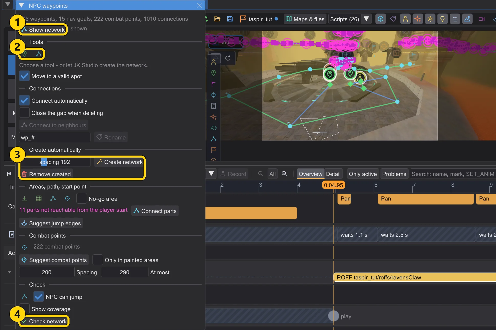
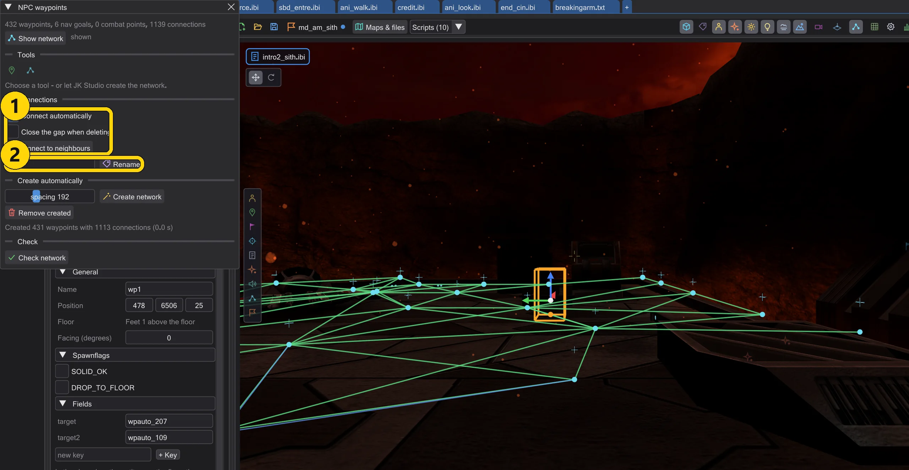
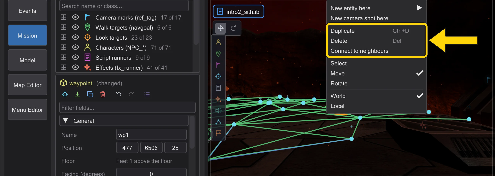
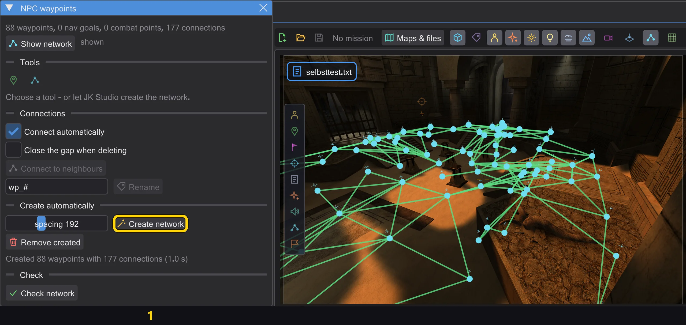
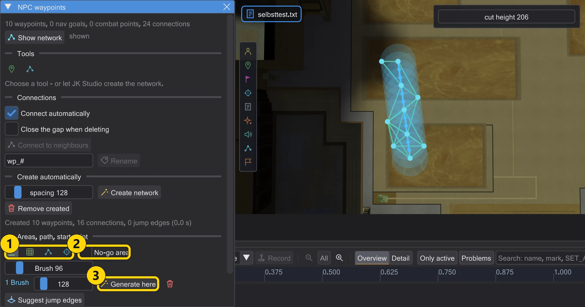
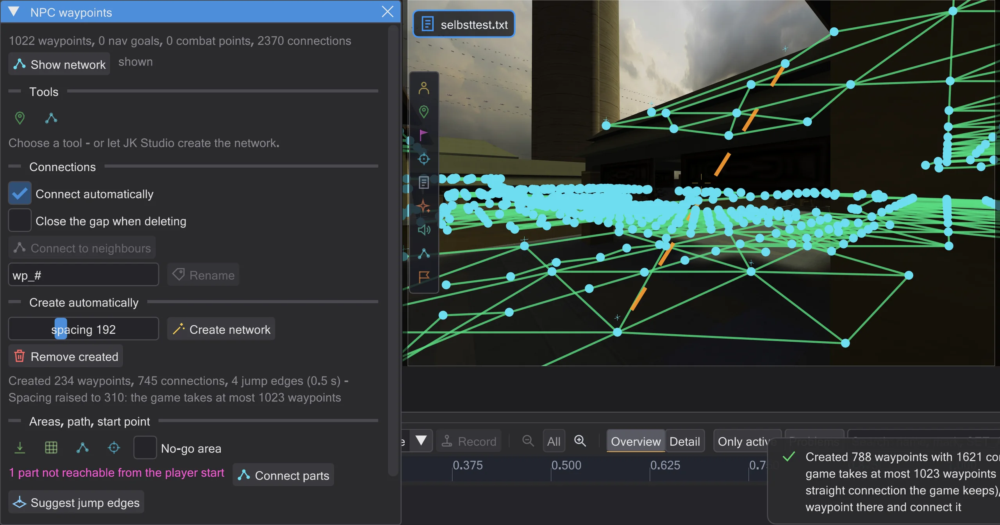
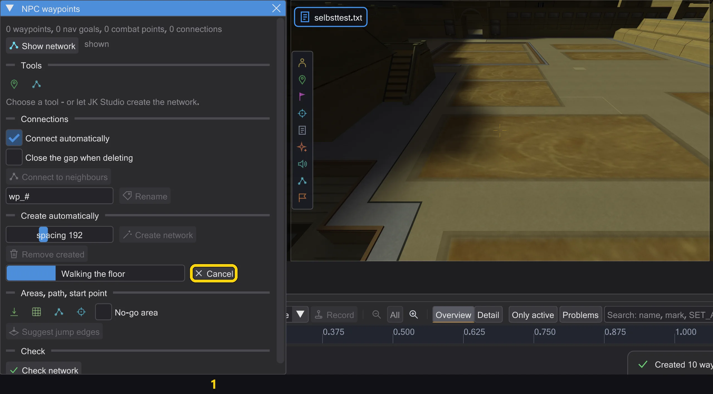
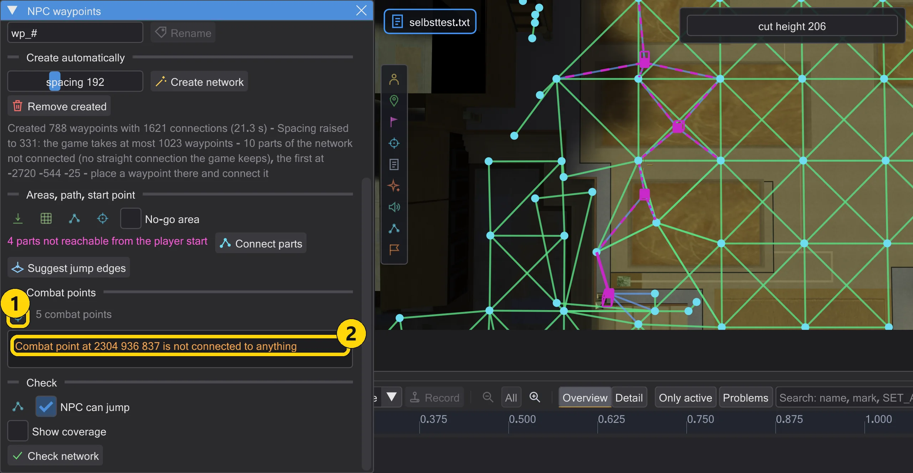
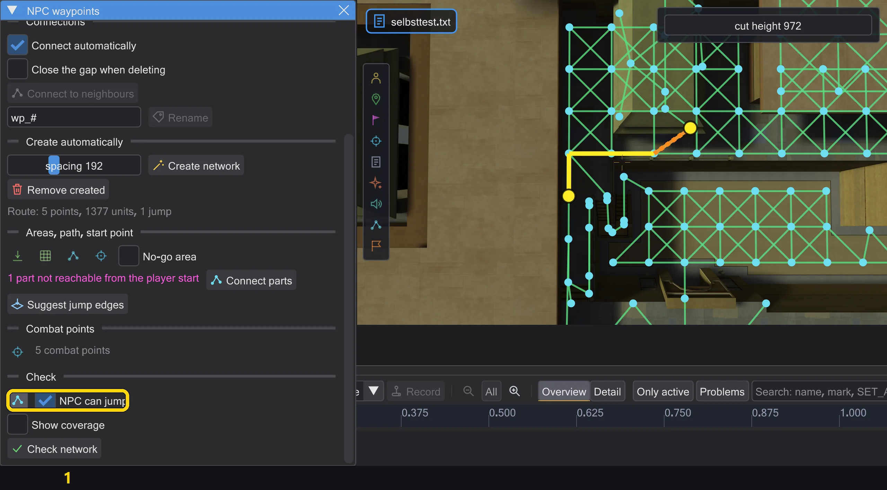
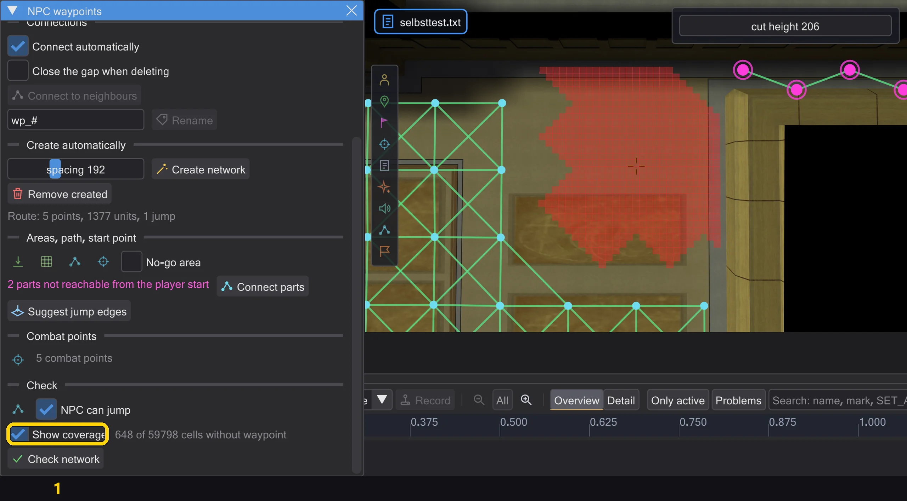

Map and scene
NPC waypoints
The network NPCs walk on - to far walk targets in cutscenes, and when they chase or flee. Place it by hand or let the program build it, then check it.

| No. | Name | What it does |
|---|---|---|
| 1 | Show network | Shows the network on the map. |
| 2 | Place waypoints / Connect | Place points by clicking the floor / connect two points. |
| 3 | Create network / Remove created | Spread a network over the walkable floor / remove what was created. |
| 4 | Check network | Finds what the game would reject; click a problem to fly there. |
Open it with NPC waypoints in the map toolbar. Show network draws the paths: green set by hand (target), blue automatic (nav goals and combat points), orange jumps (targetJump).
- Place waypoints: click the floor - each new point is connected to the one before. Shift+click starts a new path, Esc ends.
- Connect: click two points to connect them (Ctrl: a jump); clicking two connected points disconnects them. A point has at most four connections.
- Create network spreads waypoints over the walkable floor (spacing: the original levels use about 230) and connects them - one undo step. Remove created removes only those, hand-placed ones stay.
- Check network finds what the game would reject or NPCs cannot use; click a problem to fly there.
Delete, connect automatically, duplicate#

| No. | Name | What it does |
|---|---|---|
| 1 | Connect automatically / Close the gap when deleting / Connect to neighbours | Connect like the game - automatically, when deleting, or for the selection. |
| 2 | Rename | Rename the selected waypoints by a pattern. |
- Delete (Delete, the button in the inspector or Delete in the right-click menu) also removes every
targettotargetJumpthat named the deleted waypoint - in the same undo step. If other entities are named, the program asks first. With Close the gap when deleting the neighbours of a deleted waypoint connect to each other where the game's edge test allows it. - Connect automatically (on by default): a waypoint you place, move or duplicate connects to the waypoints within spacing that the game connects too - with the game's own edge test (NAV::TestEdge, in Jedi Outcast HardConnect), nearest first, at most four
targetfields per point. After moving, connections the game would drop are removed; all in one undo step. Connect to neighbours does the same for the selection. Nav goals and combat points are left out: the game connects them itself. - Duplicate (Ctrl+D or the right-click menu) on several waypoints: the copies get free names and stay connected among themselves, connections to outside stay as they were; then they connect to their new neighbours. The field next to Rename renames the selected waypoints by a pattern (
#becomes a number); everytargetthat named them follows. - Create network also starts from the waypoints already on the map: place one in a room the generation missed and generate again - the room gets its network, connected to your waypoint.

Generation: rooms, stairs, doors#

| No. | Name | What it does |
|---|---|---|
| 1 | Create network | Spread waypoints over all floor an NPC can walk to. |
- Create network walks like an NPC in the game from the player start, the characters, the nav goals and the waypoints on the map: 15 units per step (an NPC running for one frame), up and down steps of at most 18 (
STEPSIZE), on floor no steeper than the game allows (MIN_WALK_NORMAL), against the game's collision - clip brushes block, decoration without collision does not. So it reaches every room a figure can walk into, also through narrow doors. - Points come on the grid of spacing, at the top and bottom of every stair and ramp that climbs more than one step, and wherever the grid would leave a gap of more than one spacing - in doorways and small rooms. Ramps get points on the slope too.
- A connection is kept only if a figure can walk the straight line and the game's own edge test (NAV::TestEdge, in Jedi Outcast HardConnect) keeps it in both directions. Doors count as open, as the game's network build opens a door that is in the way; whether NPCs may pass it is decided while playing, as in the game.
- The game takes at most 1023 waypoints. If the grid needs more, the spacing grows (up to three times spacing) and the message says so. Roofs and ledges that can only be reached by jumping get no points from walking; click there with Start point (below).
Areas, path, start point, jump edges#

| No. | Name | What it does |
|---|---|---|
| 1 | Brush Lasso Path Start point | Paint an area (brush, lasso), draw a path, click a start point. |
| 2 | No-go area | The next painted area is a no-go area. |
| 3 | Generate here | Generate only in this area, with its own spacing. |
- Brush and Lasso paint on the floor with the left mouse button held - in the 3D view or in the top view. Generate here walks like an NPC only inside the area and places waypoints at the area's spacing where none are yet; they connect to the waypoints around with the game's edge test, as when placing by hand. One undo step. Areas are kept for the map (in the settings folder, not in the .bsp) and come back when you open it again.
- With No-go area ticked, the next area is a no-go area (red): the generation, a path and a start point never place a waypoint there. Points around it still connect across it where the game's edge test passes.

- Path: draw a line over the floor. Waypoints appear along it every spacing, set on the floor like the generation does, and neighbours are connected where the game's edge test keeps the edge in both directions. Where it does not, or where the game would not keep a waypoint, a red cross marks the place and the message names the first one. The path connects to the waypoints around. One undo step.
- Start point: click on floor the generation did not reach - a roof, a ledge, a room behind a drop. From there it walks on like an NPC, places waypoints where the network does not cover the floor yet and connects them: on foot if a figure can walk there, otherwise with jump edges (below). One undo step.

- Jump edges are
targetJump. The game only jumps on such an edge, does not test it when it loads the map, and only lets NPCs that can jump use it (force jump, or a class that jumps by itself). Suggest jump edges (also after a start point and Connect parts) writes one only between parts of the network that are not connected otherwise, and only where an NPC really makes the jump in the game, in both directions - the same test the game runs before jumping (NPC_TryJump, NPC_Jump): at most 750 apart, at most 450 down, floor under the target, and an arc the NPC's box gets through. Each waypoint has onetargetJumpfield. Jedi Outcast has no jump edges. - Waypoints the player start cannot reach over the network are drawn violet, and the window counts the parts. Connect parts walks from each such part towards the network (as with a start point there, within two spacings around it) and connects it - on foot, otherwise with jump edges.

- Generating takes a few seconds on big maps. It runs in the background: the window shows progress and step, and you can keep looking around or work in other windows. The result comes in one undo step at the end - the same network as computed directly. If the entities change in the meantime, the result is discarded with a message; Cancel stops it and changes nothing.
Combat points, test route, coverage#

| No. | Name | What it does |
|---|---|---|
| 1 | Place combat point | Click the floor to place a combat point (point_combat). |
| 2 | Combat points | Warnings exactly like the game's messages; click one to fly there. |
- Gunners move to combat points for cover or a better angle. Place combat point places one per click on the floor, 25 above it like a waypoint; several clicks place several. Delete, undo and Ctrl+D work as for every entity.
- A combat point needs no target. When the map loads, the game makes it a point of the network itself and connects it to up to four nearby waypoints on the same floor (dotted lines). Then it assigns each combat point the nearest point of the network it can see - normally the combat point itself. Only if the game cannot make it a point (a box around it touches a wall), the solid line leads to the waypoint it gets instead.
- Red: the game prints "Combat Point at ... has no waypoint" for it - it finds no point of the network for it at all (for example on a map without connections, or by a wall far above all waypoints). Orange: "not connected to anything" - it is a point, but no waypoint is close enough on the same floor.

- Test route: click two points on the floor. The editor shows the route an NPC would take in the game - from the point of the network the game picks for the start to the one for the goal, along the network as the game builds it. With NPC can jump the NPC may use jump edges (as with force jump). If there is no route, the window says why. A missing connection shows up at once, before you look for it in the game.

- Show coverage switches to the top view and colours every patch of floor red (32 x 32) from which no waypoint can be reached on foot within spacing - walking like the generation, from the player start, the characters and the waypoints. These are the spots a generation or a path missed. It is calculated in the background and again after every change.
- Move to a valid spot (on by default): a waypoint you place by hand where the game would drop it - in solid, too close to a wall or floating - goes to the nearest spot on the same floor where the game keeps it, with the same rules as the generation. The status line says how far and where to. Without it, the waypoint stays where you clicked and the status line warns.
The cutscene preview uses this network for walks exactly like the game: far targets need a path here, otherwise the figure stands still (How figures move - like in the game). A network needs at least four waypoints. Doors on the network count while they are open; a closed door counts only if it opens by itself for NPCs.